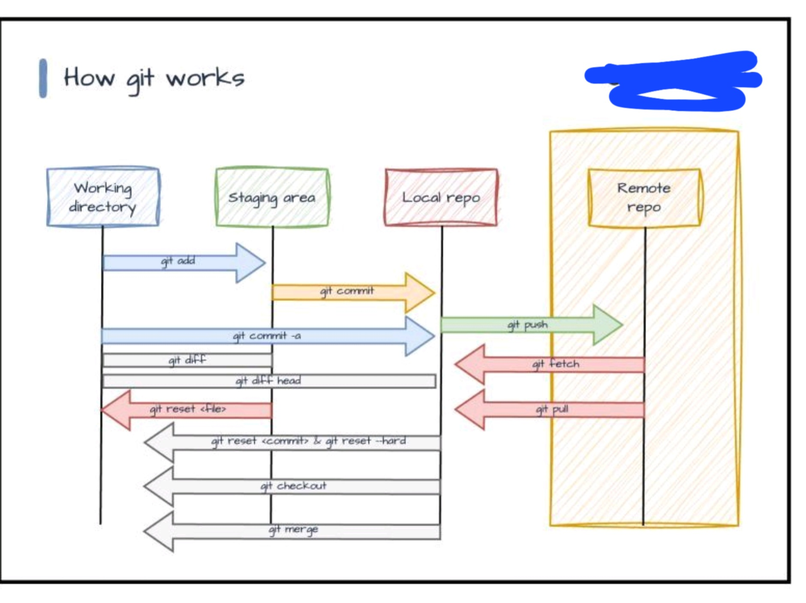
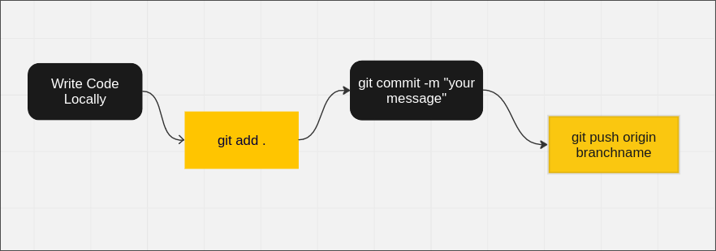

Preface:
This is the very first lesson written for the RRHS coding club, and we'd like to hear your feedback! After completing this lesson, please fill out the google form containing your opinions upon the quality of the lesson's content, appearance, and engagability. Please be honest, as we do want to improve!
What is Git?
Git is a version control system which is capable of cataloging all changes you make to tracked files. When tracking files, consider all changes you make to a document as temporary, only becoming “permanent” or lasting when you decide to commit to said changes. A good analog of this is the history page of a Google Doc. The history page categorizes and catalogs all changes performed on the document. Some information included would be like: the editor's name as well as containing a small bit of information regarding the topic of the changes.
Why do we use Git?
Version control systems-such as git-are used in the tech industry to bolster collaboration. Similar to sharing a google doc, inviting a person to a code's repository allows them to view the code base with editor permissions. This allows other programmers to work on parts of the product, as well as leave their mark on the final version. In short, git enables programmers to catalog their changes, collaborate with other developers, and have greater control over how the end product is formed. As a member of the RRHS Coding Club you will likely utilize Git the most as it is the version control system which we “subscribe” to. However, if you are interested in other content trackers please visit this website for more information!
How does Git Work?
The concept of git is based upon “branches.” The commands you run impact the expansion, contraction and details of such branches. Below is a good illustration of git branching alongside a thought-bubble-esc illustration of the standard git contribution process.
 How to use Git: